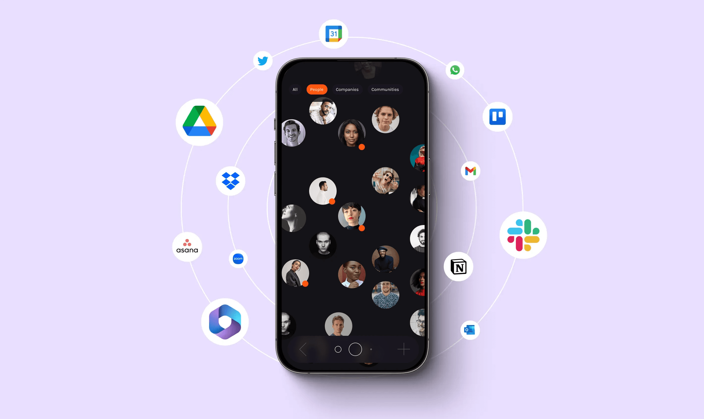
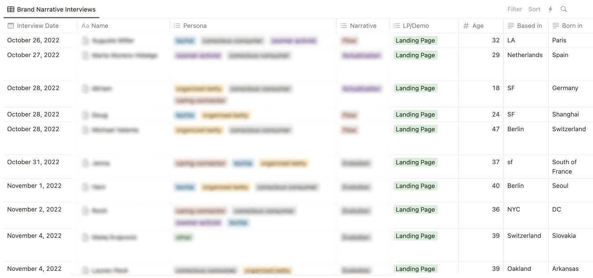
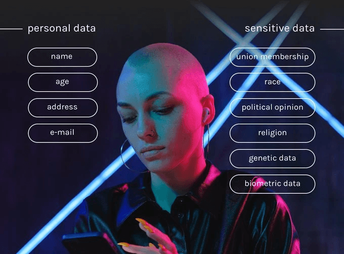

Memri AI · 2022–23 · AI Product Strategist
Memri unifies fragmented personal data into an AI-driven knowledge graph — productivity without surrendering data sovereignty. I led 0→1 product strategy, prototyping, and validation.

I developed the 0→1 strategy for unifying fragmented personal data across major platforms — mapping how NLP techniques like entity recognition, semantic parsing, and relationship extraction could turn unstructured content into actionable insight, and partnering with engineering on a scalable, privacy-first knowledge-graph architecture.

High-fidelity prototypes validated the core value: navigating your own data seamlessly through AI-driven knowledge graphs and contextual recommendation. Market research, competitive audits, and persona development scoped the MVP; early testing confirmed fit and drove pre-launch subscriber growth.

Memri laid groundwork for a new category of personal digital experience — less cognitive friction, less noise, more focus, owned by the user.